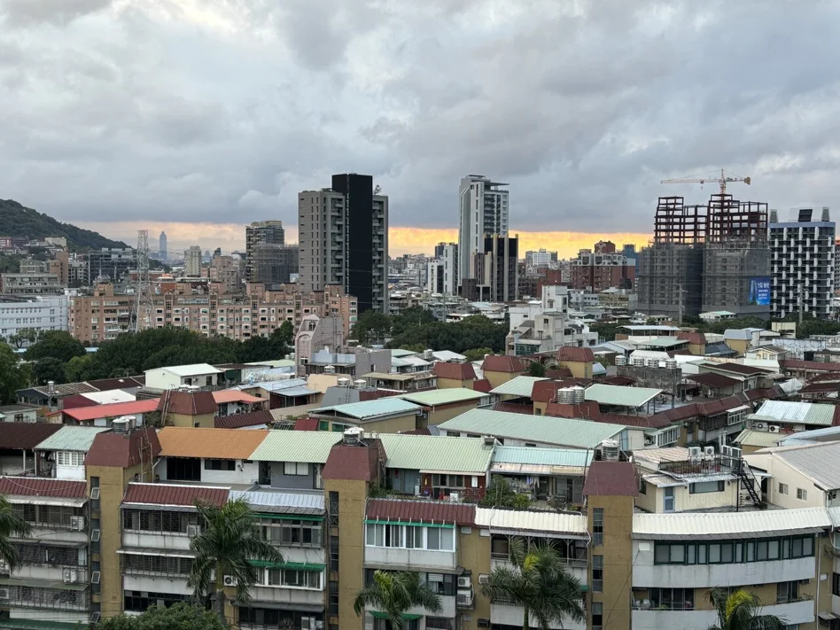

2026-03-14 10:37聯合新聞網／綜合報導/廖泓勳

少子化議題持續發酵，有網友在 房版發文指出，新生兒數量持續下降，未來人口可能集中
在少數城市，因此好奇是否代表新竹以南除了台中外，其他地區房市都應該提前避開。
原PO表示，少子化趨勢看起來愈來愈明顯，而且不像日本、韓國那樣在某個數字附近維
持，而是持續下滑。他認為未來人口可能集中在「北北基桃竹」以及台中兩個區域，因此
提出疑問，是否代表新竹以南除了台中之外，其餘地區的資產風險會逐漸提高。
部分網友認為人口集中確實是趨勢，也有人指出數據顯示人口流入的城市相對集中，「整
體人口增加確實就是大台北桃園新竹台中」、「僅剩雙北桃園新竹台中實居遠超戶籍」。也
有人認為區域差異會逐漸擴大，「人口已經進入類零和遊戲了 吸力不如外地的地方注定逐
漸萎縮」。
但也有不少人認為問題沒有那麼單純，「人口跟房價不一定成正相關 南部頂多核心區域縮
小不會消失」。也有人提醒，不同城市內部差異也很大，「新北 桃園 新竹 也是要看地
方」、「住北部就買北部 住中部買中部沒問題」。